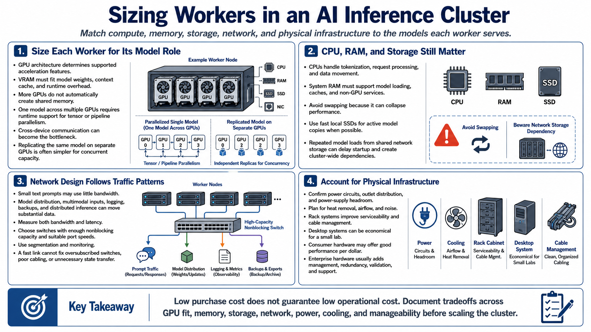

Hardware and Networking
Connecting to LMS... Progress: in progress

Narration
Size each worker for the models it will serve. GPU architecture determines supported acceleration features, while VRAM determines whether model weights, context cache, and runtime overhead fit. More GPUs do not create shared memory automatically. A runtime must support tensor or pipeline parallelism to divide one model across devices, and cross-device communication may become the bottleneck. Replicating a model on separate GPUs is often simpler when the goal is concurrent capacity.
CPUs handle tokenization, request processing, data movement, and services that surround inference. System RAM must accommodate model loading, caches, and non-GPU components without swapping. Use fast local SSD storage for active model copies when possible; repeatedly loading large models over a shared network can delay startup and turn storage into a cluster-wide dependency.
Network design follows traffic patterns. Small text prompts may use little bandwidth, but model distribution, multimodal inputs, logging, backups, and distributed inference can move substantial data. Measure both bandwidth and latency. Choose switches with enough nonblocking capacity, appropriate port speeds, and management features for segmentation and monitoring. A fast link cannot compensate for an oversubscribed switch, poor cabling, or a design that transfers model state unnecessarily between nodes.
Account for physical infrastructure. Confirm power circuits, outlet distribution, power-supply headroom, heat removal, airflow, and noise before installing dense compute. Rack systems improve serviceability and cable management, while desktop systems can be economical for a small lab. Consumer hardware may offer strong performance per dollar but usually has fewer remote-management, redundancy, validation, and support features. Document those tradeoffs rather than assuming low purchase cost means low operational cost.